Fullscreen mode
Just press »F« on your keyboard to show your presentation in fullscreen mode. Press the »ESC« key to exit fullscreen mode.
Overview mode
Press "Esc" or "o" keys to toggle the overview mode on and off. While you're in this mode, you can still navigate between slides, as if you were at 1,000 feet above your presentation.
Computational Geometry and Computer Graphics
Lesson 3
Plan
- Coordinate Systems
- Cartesian Coordinate Systems
- O
- Vector
- Sum and Min
- Movement
- Vector field (vs Gradient)
- Derivative
Coordinate Systems?
Coordinate Systems
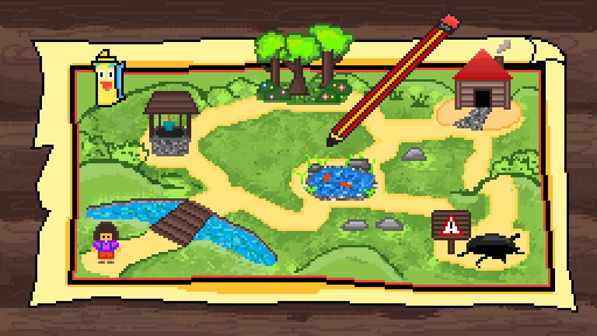
Coordinate Systems - is a system that uses one or more numbers, or coordinates, to uniquely determine the position of the points or other geometric elements on a manifold such as Euclidean space.
Cartesian Coordinate Systems
Renatus Cartesius - René DesCartes - In old French, "des" is a contraction of "de les", meaning "of the" or "from the".
Cartesian Coordinate Systems

Map of the hypothetical city of Cartesia
Cartesian Coordinate Systems
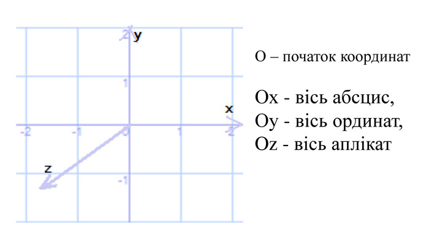
Dont you have any questions?
Cartesian Coordinate Systems

Base geometric objects?
Point
A point has no dimensions — no length, width, or height.
It simply represents a location in space.
Line
A line is straight and extends infinitely in both directions.
It has one dimension — length.
Line Segment
A part of a line that has two endpoints.
It is measurable and has a fixed length.
Ray
A ray starts at a point and goes infinitely in one direction.
Plane
A flat, two-dimensional surface that extends infinitely.
Defined by three non-collinear points.
Solid
A three-dimensional object with volume.
Examples: cube, sphere, cylinder.
What did we loss?
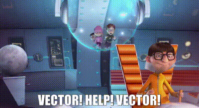
Vectors
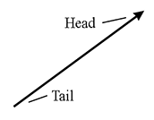
Vectors are indeed a fundamental geometric object, especially in more advanced geometry, physics, and computer graphics.
Vector
A vector is a quantity that has both magnitude and direction.
It is often represented by an arrow.
- The length of the arrow = magnitude
- The direction of the arrow = direction
Vector Notation
Vectors are usually written as 𝐯 or ⟨x, y⟩ in 2D space.
Example: A vector from point A(1, 2) to point B(4, 6) is ⟨3, 4⟩.
Applications of Vectors
- Physics – force, velocity, acceleration
- Computer graphics – motion and transformations
- Navigation – displacement and direction
Vectors almost Radius Vector
Position (Geometry) — WikipediaVectors - Sum and Minus - Triangle Rule
Vectors - Sum and Minus - Triangle Rule

Vectors - Sum and Minus - Triangle Rule
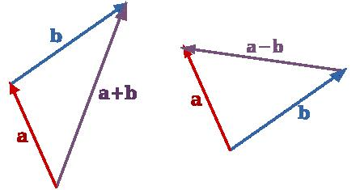
Vectors - Sum and Minus - Triangle Rule
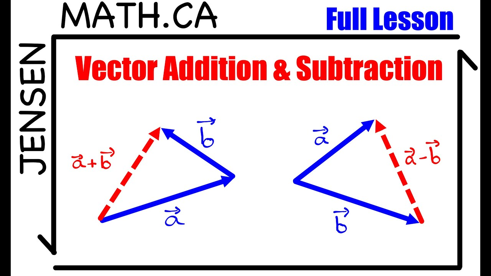
Movements - Examples
Brownian motion
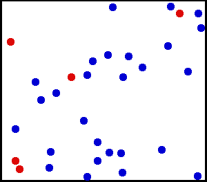
https://en.wikipedia.org/wiki/Brownian_motion Brownian Motion — Wikipedia
Brownian motion
Brownian tree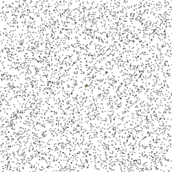
Brownian Tree — Wikipedia
Brownian motion
Brownian tree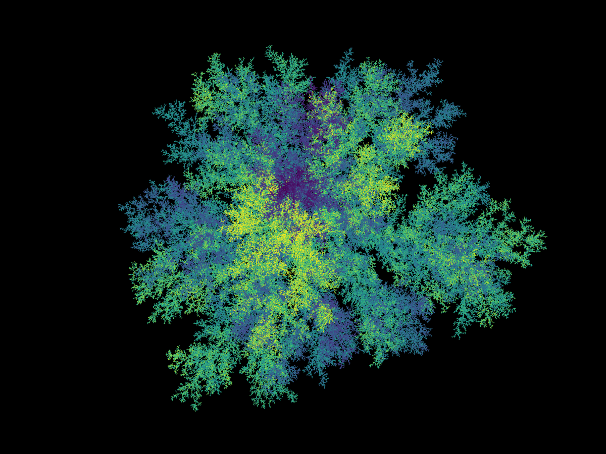
Brownian Tree WebGL (GitHub)
Brownian motion
Mountains and landscape
More Noise by Inigo Quilez
Brownian motion
Expert Level:The Book of Shaders — Chapter 13
Vector field (vs Gradient)
What will be drown:x = 5;
Vector field (vs Gradient)
What will be drown:\[ \left\{ \begin{aligned} \frac{dx}{dt} &= y \\ \frac{dy}{dt} &= -x - y \cdot z \\ \frac{dz}{dt} &= a \cdot y^2 \end{aligned} \right. \]
Vector field (vs Gradient)
We need to answer three questions first:- How to find out where the wind is blowing
- Where the water is running
- And how to find the ground if you’re in the snow after an avalanche
Vector field (vs Gradient)
Find out where the wind is blowing?Vector field (vs Gradient)
Find out where the wind is blowing - How to see it?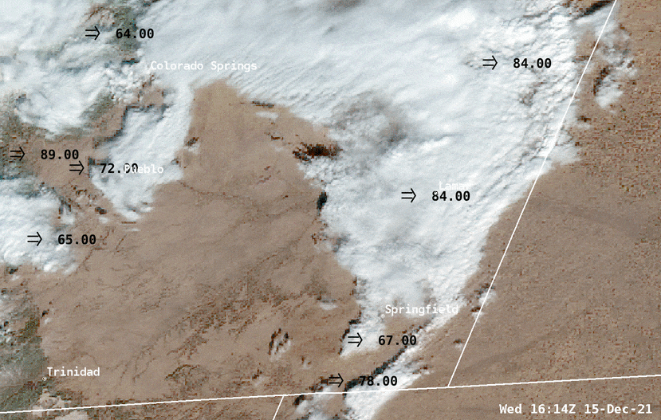
Vector field (vs Gradient)
Find out where the wind is blowingVector field (vs Gradient)
Where the water is running - at the Dark Night?Vector field (vs Gradient)
Where the water is running?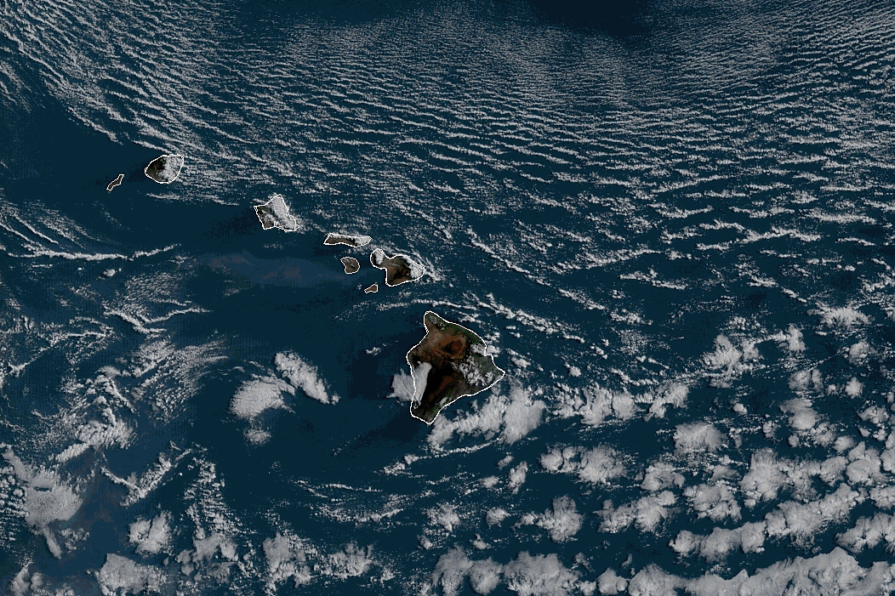
Vector field (vs Gradient)
Where the water is running?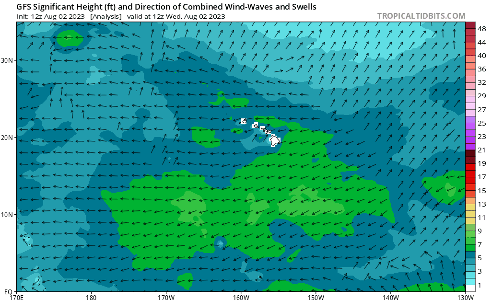
And how to find the ground if you’re in the snow after an avalanche
Derivative
Derivative
What will be drown:y = x;
Derivative
What will be drown:\[ x'(t) = 2 \]
Derivative
What will be drown:\[ x(t) = 2x + С \] C=0
Derivative
What will be drown:\[ x'(t) = 2 \] \[ x(t) += 2t \] C=0
Derivative
What will be drown:\[ x'(t)= 2x(t) \]
Vector field (vs Gradient)
What will be drown:\[ x(t) += 2x*t \] \[ x(t) = Ce^{2t} \] C=1 \[ x(t) = e^{2t} \]
Vector field (vs Gradient)
What will be drown:\[ x(t) += 2x*t \]
| x(0) | x(1) | x(2) |
|---|---|---|
| 1 | 3 | 9 |
Vector field (vs Gradient)
What will be drown:\[ x(t) = e^{2t} \]
| x(0) | x(1) | x(2) |
|---|---|---|
| 1 | 7.389 | 54.598 |
| Derivative function | x(0) | x(1) | x(2) |
|---|---|---|---|
| \[ x(t) = e^{2t} \] | 1 | 7.389 | 54.598 |
| \[ x(t) += 2x*t \] | 1 | 3 | 9 |